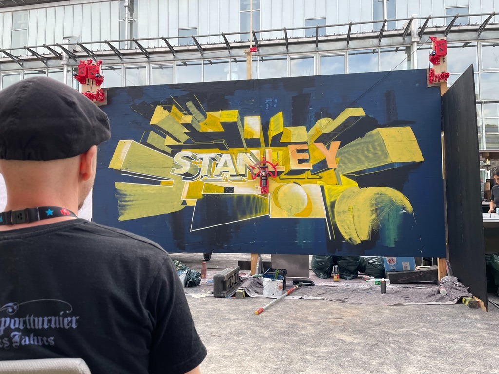

I AM SELECT

Dot-Bot at Maker Faire 2026
A project by the Dot-Bot team with collaborators
olivier.berlin
and
jaschamueller.art
.
Related repositories
ffito
SVG hatch-fill editor for pen plotters
spiralux
Bezier path editor and spiral generator
cybermaze
Maze generator with SVG export
More projects
loading repos…